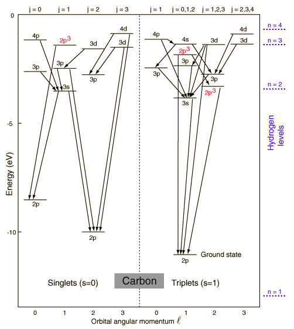

Carbon Energy Levelsafter Rohlf. The ground state electron configuration of carbon is 1s22s22p2. For excited states, the most typical situation is that five of the electrons maintain the configuration 1s22s22p1 and a single electron is elevated. The states in the above diagram use the spectroscopic notation to characterize the state of that one electron. However, three of the levels in the diagram have the configuration 1s22s12p3 and are denoted 2p3. The lines connecting levels indicate radiative transitions, which are subject to selection rules depending upon the angular momenta.
|
Index Reference Rohlf Ch 9 | ||
|
Go Back |